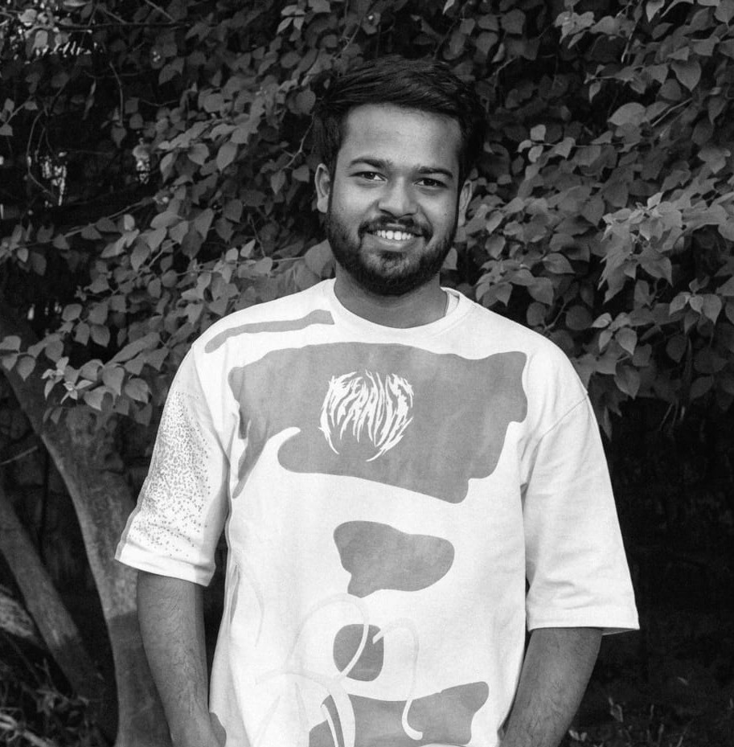

Intelligence is the
ultimate sophistication.
I am an AI/ML Engineer crafting scalable, intelligent systems, RAG pipelines, and agentic architectures.

Experience
Encrypta IN — Research & Development Intern
- Architected a conversational FAQ chatbot using a RAG pipeline (LangChain + FAISS), achieving 90% accuracy across multi-source queries and processing 100+ queries/minute; deployed on AWS EC2 with S3.
- Engineered a high-performance FastAPI backend with async pipelines and WebSocket-based real-time communication, lowering request time by 65% and supporting 500+ concurrent users.
- Optimized retrieval pipelines (chunking, embeddings, reranking), improving answer relevance by 40% and increasing factual consistency.
Infosys Springboard — AI/ML Intern
- Built a computer vision system for PCB defect detection and multiclass classification, recorded 94% classification accuracy spanning 6 categories.
- Developed a scalable preprocessing pipeline for 10,000+ images, applying augmentation and normalization using TensorFlow.
- Designed and deployed RESTful inference APIs (Flask) enabling real-time predictions with reduced latency by 60%.
Key Projects
Text-to-SQL Conversational Agent
Designed a stateful LangGraph pipeline with conditional edges for schema extraction, SQL generation, execution, and self-healing retry on query failure. Built a natural language interface over PostgreSQL enabling non-technical users to query relational data, reducing failure rate by 80% via autonomous feedback loops.
Financial Advisory Bot (RAG + GenAI)
Developed a personalized financial advisory assistant using RAG, handling 100+ user queries per session with context-aware responses. Integrated Groq API, user profiling, and vector retrieval pipelines, improving recommendation relevance by 40% and achieving 92.1% accuracy in intent classification.
Swara – Misarticulation Detection
Built an ASR + NLP pipeline to detect speech misarticulation in children aged 2–12 years. Operationalized the system using Flask and Azure with OpenCV-based speech visualization, attaining 88.6% word-level prediction accuracy. (Copyright Registered: SW-18865/2024)
Plant Disease Detection System
Designed a complete CNN-based image classification model to identify potato disease with 92% accuracy across 3 disease classes. Trained model on 9,000+ images using TensorFlow, applying data augmentation to handle class imbalance. Delivered the model through a Flask API custom web interface, achieving less than 1s inference time and enabling scalable, real-time disease detection for field level usage.
Open Journal System (SaaS)
Developed a production-ready SaaS application for academic publishing. Architected a robust full-stack solution featuring role-based authentication (JWT) for authors, editors, and reviewers. Built custom dashboards and an enhanced peer-review submission workflow, backed by PostgreSQL and Drizzle ORM for reliable data persistence.
Multimodal ASD Screening Framework
Final Year Major Project: Developed a probabilistic multimodal deep learning system for Autism Spectrum Disorder (ASD) screening. Integrated EEG, eye-tracking, and behavioral data using CNN-LSTM encoders and a Variational Autoencoder (VAE) for 64-dimensional shared latent representations. Incorporated SHAP and Grad-CAM to provide clinically interpretable explanations for predictions.
Technical Stack
AI / ML & Domains
Machine Learning, Deep Learning, Computer Vision, NLP, RAG Pipelines, LLM Integration, Prompt Engineering, Agent Orchestration
Frameworks & Libraries
PyTorch, TensorFlow, Hugging Face, LangChain, LangGraph, FAISS, Pinecone, Scikit-learn, NumPy, Pandas, OpenCV
Cloud & APIs
AWS (EC2, S3, Lambda, SageMaker), Docker, Azure, FastAPI, Flask, REST, WebSocket
Languages & Tools
Python, SQL, JS, HTML/CSS, PostgreSQL, Power BI, Next.js, Git, Groq API
Live Projects
Let's Connect
Seeking roles to deliver scalable, intelligent solutions.
kumbharprasad23@gmail.com